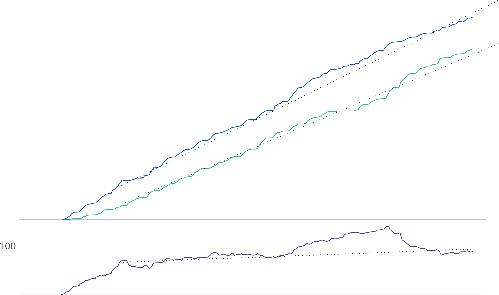

What is support?
DEV

Client
TS
DEV
QA
collect & validate information
report problems
consult
prepare all required information
do sanity check
distinct problem formulation
deeper analysis
actual fixing
confirm fix
...and that nothing else has been broken along way
The
news
|
|
SUPPORT + DSUPPORT
SUPPORT
|
| Policy | build *.* |
| QA |
weekly builds tighter interaction |
Describe tools and methods


Team
- Anna
- Alex
- Andrey
- Denis
↑load
Support centers
- local timezones
- phone support
- more languages